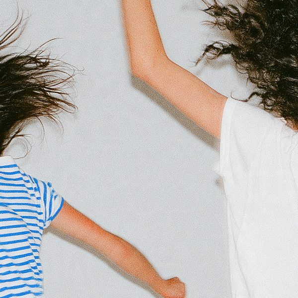
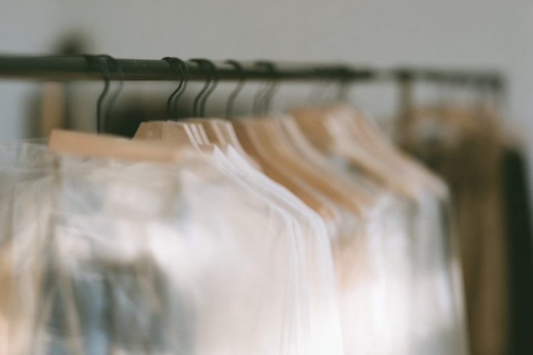
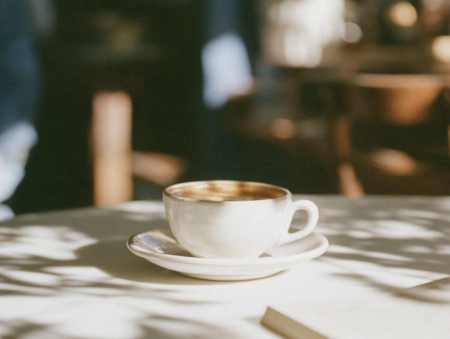

Two weeks of things to do while you're here to vote.שבועיים של דברים לעשות בזמן שאתם בארץ להצביע.
Fillers for any free afternoon. On Shabbat (31.10, 7.11) many shops close and most public transport stops, so plan on a car, taxi or walking.לכל אחר צהריים פנוי. בשבת (31.10, 7.11) הרבה חנויות סגורות ורוב התחבורה הציבורית לא עובדת, אז כדאי לתכנן רכב, מונית או הליכה.
"Works and Days" – ceramics, glass, textile, jewelry, industrial design. English guided tours exist; dates on the museum site. Museum open 10:00–16:00. Also on: Layers of Light, analog cameras 1860–2000.״מעשים וימים״ – קרמיקה, זכוכית, טקסטיל, תכשיטים ועיצוב תעשייתי. יש גם סיורים מודרכים, התאריכים באתר המוזיאון. המוזיאון פתוח 10:00–16:00. עוד במוזיאון: ״שכבות של אור״, מצלמות אנלוגיות 1860–2000.
Museum pageעמוד המוזיאוןWorks from three Biennales installed in the light-rail station. Free if you're passing through anyway.עבודות מהביאנלה מוצגות בתחנת הרכבת הקלה. חינם, אם ממילא עוברים שם.
21st edition. Screening schedule on the festival site.המהדורה ה־21. לוח ההקרנות באתר הפסטיבל.
tlvfest.comCity-run music and art festival, 59 shows, curated by Shlomi Shaban. Closing show is Sun 8.11 at Heichal HaTarbut. Tickets via Ticketmaster; Digitel holders get discounts.פסטיבל מוזיקה ואמנות של העירייה, 59 מופעים, בניהול אמנותי של שלומי שבן. מופע הנעילה בא׳ 8.11 בהיכל התרבות. כרטיסים בטיקטמאסטר, הנחות למחזיקי דיגיתל.
telavivfestival.co.ilAbout 60 minutes lying on mattresses to a live musician set, often ending with a talk with the artist. Usually weekday evenings (18:30 or 20:30). Book ahead; many sessions sell out. 3rd floor; the site doesn't mention a lift.כשעה של שכיבה על מזרנים מול סט חי של מוזיקאי, לרוב עם שיחה עם האמן בסוף. בדרך כלל בערבי חול (18:30 או 20:30). כדאי להזמין מראש, הרבה מפגשים נמכרים. קומה 3, באתר לא כתוב אם יש מעלית.
sol-therapy.com/cloud Shoken 27, 3rd floorשוקן 27, קומה 3
Want to dance or move?בא לכם לרקוד או לזוז? zuzu.today A calendar of movement events across Israel: ecstatic dance, contact improv, Gaga, Nia, biodanza and more.לו״ז של אירועי תנועה בכל הארץ: אקסטטיק דאנס, קונטקט אימפרוביזציה, גאגא, ניה, ביודנסה ועוד. Find a class or a dance ↗למצוא שיעור או מסיבה ↗
Want to shop local fashion?בא לכם לקנות אופנה מקומית? mode-il.com A curated guide to Israeli independent fashion designers. Find a label you like, then visit the studio or shop.מדריך אוצרותי למעצבי אופנה ישראלים עצמאיים. מוצאים מותג שאוהבים וקופצים לסטודיו או לחנות. Browse designers ↗לגלות מעצבים ↗Fashion pop-up in its last week. Mon–Thu 10:30–18:00, Fri 10:00–14:00. On election day (27.10): 27% off selected new-collection pieces.פופ־אפ אופנה בשבוע האחרון שלו. ב׳–ה׳ 10:30–18:00, ו׳ 10:00–14:00. ביום הבחירות (27.10): 27% הנחה על פריטים נבחרים מהקולקציה החדשה.
An immersive exhibition in the old Tara factory: 43 rooms of art, colour and installations by dozens of artists. Book tickets online.תערוכה חווייתית במפעל הישן של טרה: 43 חדרים של אמנות, צבע ומיצבים של עשרות אמנים. כרטיסים באתר.
TicketsכרטיסיםCity program bringing back strolling on Dizengoff: fashion and design shops, cafés, nightlife. Check the dates on the city page.תוכנית של העירייה שמחזירה את ההזדנגפות: אופנה ועיצוב, בתי קפה וחיי לילה. התאריכים בעמוד של העירייה.
City pageהעמוד באתר העירייהCurated by Shira Carmena: second-hand clothes collected around Europe (Kizzy Salon), jewelry by Odd Pearls, hand-made scrunchies by Nog Em Avisar, coffee by Wild Nosh. Check the post for which Friday and the hours.באוצרות שירה כרמנה: בגדי יד שנייה שנאספו באירופה (Kizzy Salon), תכשיטים של Odd Pearls, גומיות שיער בעבודת יד של נוג עם אביסר, וקפה של Wild Nosh. באיזה שישי ובאילו שעות – בפוסט.
Instagram postהפוסט באינסטגרםTufting workshop: design a rug and take it home the same day. 60×60 cm takes about 4.5 hours, 40×40 cm about 3.5. Ages 18+. Couples and group formats too.סדנת טאפטינג: מעצבים שטיח ולוקחים הביתה באותו יום. 60×60 ס״מ כ־4.5 שעות, 40×40 ס״מ כ־3.5 שעות. מגיל 18. יש גם סדנאות זוגיות וקבוצתיות.
carpet-dm.com 054-206-8815Hosted murder-mystery dinner game for 8–21 players, in Hebrew or English. Their public Halloween night is 29.10 (last tickets).משחק תעלומת רצח עם מפעיל/ה, ל־8 עד 21 משתתפים, בעברית או באנגלית. נשף ההאלווין הפתוח שלהם ב־29.10 (כרטיסים אחרונים).
mysterymurderclub.com WhatsApp: 052-3872598Open Saturday, closed Sunday. Last entry an hour before closing. Now showing: Noma Bar: Look Again, and Tom Wesselmann: All Out (closed Mon 26.10). Alex Levac: Black Box opens Tue 27.10. The Kusama Infinity Room is closed for maintenance.פתוח בשבת, סגור ביום ראשון. כניסה אחרונה שעה לפני הסגירה. מוצגות עכשיו: ״נומה בר: מצד שני״ ו״טום וסלמן: בגדול״ (סגורה בב׳ 26.10). ״אלכס ליבק: קופסה שחורה״ נפתחת בג׳ 27.10. חדר המראות של קוסאמה סגור לתחזוקה.
Visit infoמידע למבקרCafés and restaurants stay open on the wooden boardwalk. The promenade runs flat all the way to Jaffa; walk part of it, sit down for the rest.בתי קפה ומסעדות פתוחים על הדק. הטיילת מישורית עד יפו, אפשר ללכת חלק ולשבת בשאר.
Most flea-market stalls are closed, but some cafés and restaurants open. St. Peter's Church and the view from the hill.רוב דוכני שוק הפשפשים סגורים, אבל חלק מבתי הקפה והמסעדות פתוחים. כנסיית סנט פטר והתצפית מהגבעה.
Swim, picnic, sunset. In the park: paths, pedal boats and kayaks.רחצה, פיקניק, שקיעה. בפארק: שבילים, סירות פדלים וקיאקים.
Workshops, tours and experiences you book directly, for a day with a friend. ↗ opens the place's own page; the rest open a web search.סדנאות, סיורים וחוויות שמזמינים ישירות, ליום עם חברה. ↗ פותח את העמוד של המקום; השאר פותחים חיפוש ברשת.
Check opening hours and the weather before you go.כדאי לבדוק שעות פתיחה ומזג אוויר לפני שיוצאים.
Dozens of open studios and gallery shops (ceramics, glass, fashion and textiles, jewelry), a large art gallery, the Janco Dada Museum and 150+ outdoor sculptures. Cafés in the village. It sits on a hillside.עשרות סטודיו וחנויות גלריה (קרמיקה, זכוכית, אופנה וטקסטיל, תכשיטים), גלריה גדולה, מוזיאון ינקו דאדא ויותר מ־150 פסלים בחוץ. יש בתי קפה בכפר. הכפר בנוי על מדרון.
ein-hod.org 04-9842029Old stables turned into shops, galleries, studios, cafés and bars. Shops: Sun–Thu 10:00–18:00, Fri 9:00–15:00. Food and bars: Sun–Fri 10:00–23:00. Closed Shabbat; some shops close Sun or Mon. The Unicorn is in the same compound, so a weekday afternoon can roll into Unicorn Dance on Thu 29.10. On election day (Tue 27.10) there's an all-day happening here, and Shuzi's market is nearby at the Old Market. Best on 29–31.10, when the free Derech HaNadiv festival fills the town.אורוות ישנות שהפכו לחנויות, גלריות, סטודיו, בתי קפה וברים. חנויות: א׳–ה׳ 10:00–18:00, ו׳ 9:00–15:00. אוכל וברים: א׳–ו׳ 10:00–23:00. סגור בשבת, וחלק מהחנויות סגורות בא׳ או ב׳. היוניקורן באותו מתחם, אז אחר צהריים של יום חול יכול להתגלגל ל־Unicorn Dance בה׳ 29.10. ביום הבחירות (ג׳ 27.10) יש כאן הפנינג לאורך כל היום, ושוק הבחירות של שוזי קרוב, בשוק הישן. הכי שווה ב־29–31.10, כשפסטיבל דרך הנדיב (בחינם) ממלא את המושבה.
urvothamanim.co.il Shuzi Marketשוק שוזיMemorial gardens at Ramat Hanadiv (paved, flat paths near the entrance), then cafés on the old main street in Zichron.גני הזיכרון ברמת הנדיב (שבילים סלולים ומישוריים ליד הכניסה), ואחר כך בתי קפה במדרחוב של זכרון.
Israel Museum in the morning, Machane Yehuda market for lunch, Old City walk before sunset. The Old City is mostly stone steps. Coffee or an event at Hamiffal (HaMa'aravim 3, café Sun–Thu 8:00–19:00, Fri 10:00–14:00). On election night it hosts a free trivia quiz.מוזיאון ישראל בבוקר, צהריים בשוק מחנה יהודה, סיבוב בעיר העתיקה לפני השקיעה. בעיר העתיקה הרבה מדרגות אבן. קפה או אירוע במפעל (המערביים 3, בית קפה א׳–ה׳ 8:00–19:00, ו׳ 10:00–14:00). בערב הבחירות יש שם טריוויה בחינם.
Crusader fortress ruins on the cliff edge, then a sea walk down to Herzliya marina. Sandy, uneven path.שרידי מבצר צלבני על שפת המצוק, ואז הליכה לאורך הים עד מרינה הרצליה. שביל חולי ולא אחיד.
Runs 5–14.11. Only worth it as an overnight.5–14.11. שווה רק עם לינה.
From 2025–26 "best of" lists. Check they're open and book ahead.מרשימות ״הכי טובים״ של 2025–26. כדאי לוודא שפתוח ולהזמין מראש.
The hummus institution. Open until it sells out.מוסד החומוס. פתוח עד שנגמר.
Sit-down dinner before a Romano night (Derech Yafo is close).ארוחת ערב לפני ערב ברומנו (דרך יפו קרובה).
Turkish coffee and vegetarian plates.קפה טורקי ומנות צמחוניות.
Gastropub with a backyard garden and an upstairs bar that often plays jazz.גסטרופאב עם חצר ירוקה ובר בקומה העליונה, לעיתים קרובות עם ג׳אז.
Lively, unpretentious Israeli–Mediterranean: house salads and kebabs. Opens at 9:00 on Fri and Sat.ישראלית־ים תיכונית, תוססת ולא מתיימרת: סלטים ביתיים וקבבים. בשישי ושבת פותחים ב־9:00.
Before a Unicorn night.לפני ערב ביוניקורן.
Pick anything from Radical's calendar, then eat around the venue (HaTkhiya × Herzl, south Tel Aviv). Lots of options.בוחרים משהו מהלו״ז של רדיקל ואוכלים בסביבה (התחייה פינת הרצל, דרום ת״א). יש המון אפשרויות.
Radical calendarהלו״ז של רדיקלRadical has its own cafeteria; Hameretz2 and Kuli Alma have full bars.ברדיקל יש קפיטריה, ובמרץ2 ובכולי עלמא יש בר מלא.
